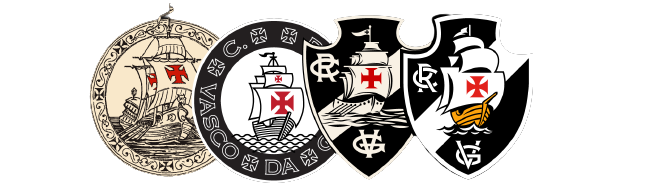
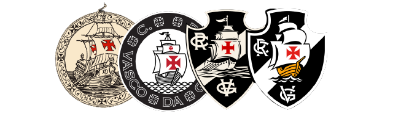

Me chamo Gabriel Pereira da silva, tenho 25 anos,
sou paraibano e apaixonado pelo Vasco da Gama.
Estudo TI na Escola Virgem de Lourdes,
em Campina Grande-PB
e criei este site para um projeto da disciplina de
"Ferramentas e Contrução de sites com HTML e CSS".
Através desse projeto vi a oportunidade de
fazer junção de duas paixões em minha vida,
o Vasco e a tecnologia.
Espero a cada dia adquirir mais conhecimento
e assim, crescer como profissional
mas, acima de tudo crescer como pessoa.
O Vasco é o time da virada, o Vasco é o time do amor
 
